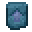
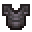
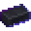

O equipamento de Manilium.
Armadura de Manilium
A armadura de Manilium tem a proteção da netherita e pode ficar ainda mais forte.
Mesa de ferraria



➜Fortalecer
No Nature Infuser, coloque a peça na entrada e uma Orbe de Mana na alimentação: +1 de defesa por orbe, até +5 em cada peça.
Nature Infuser
em cima: entrada · embaixo: alimentação
Pintar
Junte a peça com tintas na bancada (como a armadura de couro). Só os detalhes azul-claros mudam de cor.
Conversor de Almas
Qualquer peitoral pode receber um Conversor de Almas embutido no Nature Infuser.
Espada de Manilium
Uma espada que cresce com você e carrega um Bloco Mágico na guarda.
Dano sem limite
Cada Orbe de Mana infundida no Nature Infuser dá +1 de dano, sem limite.
Nature Infuser
em cima: entrada · embaixo: alimentação
Bloco na guarda
Coloque a espada vazia na entrada e um Bloco Mágico na alimentação: o bloco aparece na guarda e a espada passa a usar todas as habilidades dele, além de cortar normalmente. Para tirar o bloco, coloque a espada sozinha na bancada.
Nature Infuser
em cima: entrada · embaixo: alimentação
Pintar
Como a armadura: espada + tintas na bancada muda a cor dos detalhes.